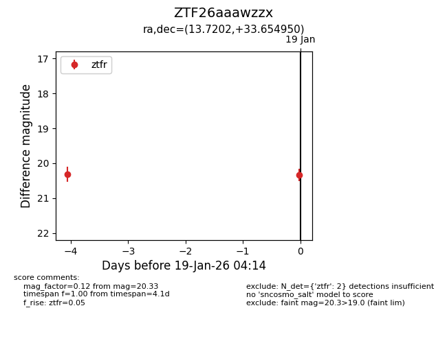
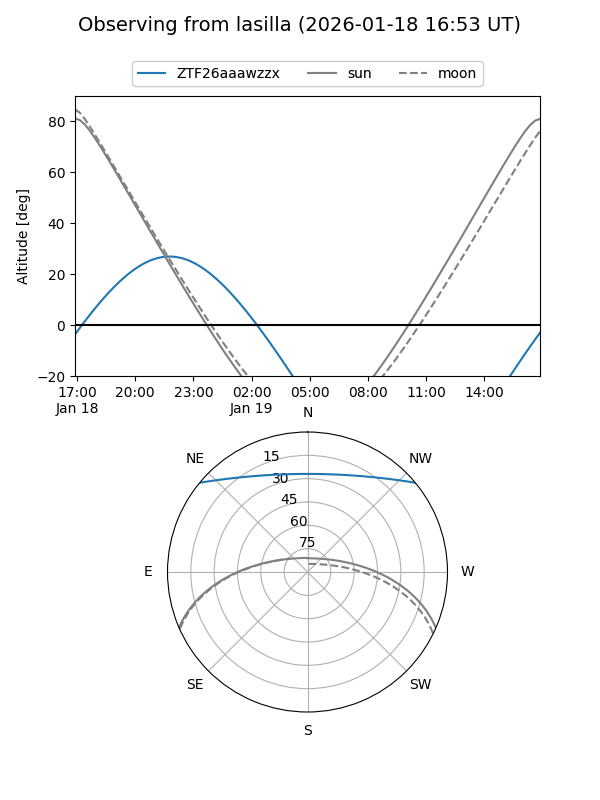
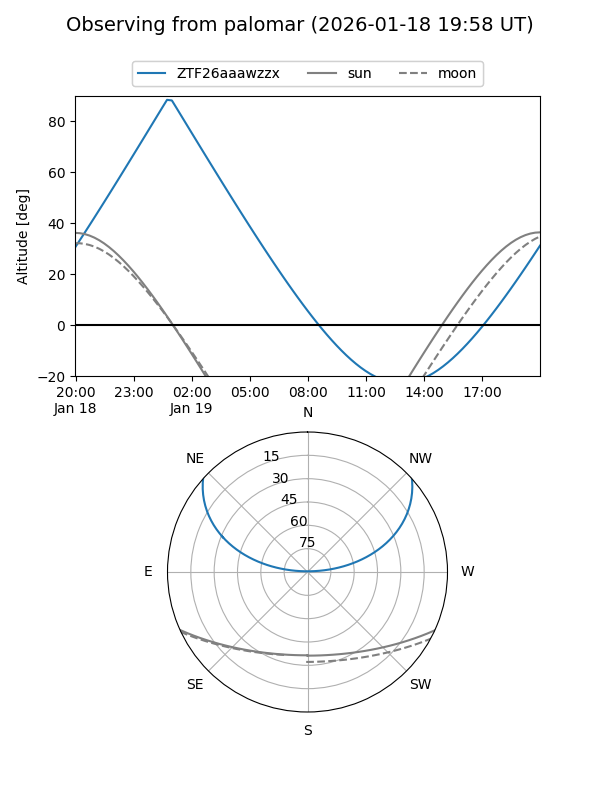

ZTF26aaawzzx
Target ZTF26aaawzzx at 2026-01-21 04:16
Aliases and brokers:
FINK: link
Lasair: link
ALeRCE: link
alt names
ZTF26aaawzzx (ztf,fink_ztf)
Coordinates:
equatorial (ra, dec) = 13.7202,+33.65495
equatorial (HMS+DMS) = 00:54:52.85,+33:39:17.82
galactic (l, b) = (123.7528,-29.21131)
Flags:
Photometry:
last ztfr=20.33
2 ztfr detections
Lightcurve

Visibility


Additional plots